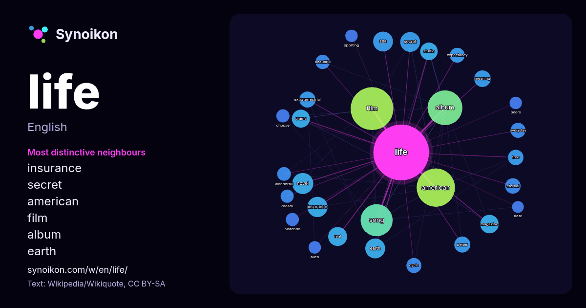

English · popular word
life
The words found around it in 1516 instances from Wikipedia, Wikiquote, Hacker News.

Most distinctive neighbours
- insurance 21×
- secret 18×
- american 17×
- film 17×
- album 17×
- earth 17×
- extraterrestrial 16×
- eternal 14×
- novel 14×
- expectancy 14×
- song 14×
- drama 14×
- everyday 13×
- real 13×
- sea 12×
- magazine 12×
- wonderful 11×
- meaning 11×
- cycle 11×
- beautiful 11×
× = how many times more often than in general Wikipedia text.
Most frequent neighbours
- film 107
- american 86
- album 71
- song 60
- novel 26
- death 25
- insurance 24
- earth 23
- sea 23
- secret 23
- series 23
- real 21
- magazine 20
- drama 19
- high 19
- church 18
- state 18
- studio 18
- company 17
- forms 17
In context
- Life is the capacity in matter, formed of one or more units called cells, for processes such as cell signalling, homeostasis, metabolism, cell growth, Wikipedia snippets · Life
- Life is the characteristic that distinguishes organisms from inorganic substances and dead objects Wikipedia snippets · Life (disambiguation)
- That's Life! is a satirical consumer affairs programme on the BBC, at its height regularly reaching audiences of fifteen to twenty million, and receiving Wikipedia snippets · That's Life!
- The phrase "life unworthy of life" (German: Lebensunwertes Leben) was a Nazi designation for the segments of the populace which, according to the Nazi Wikipedia snippets · Life unworthy of life
- that's life in . That's Life may refer to: That's Life! (film), a 1986 comedy-drama directed by Blake Edwards That's Life (1980 Wikipedia snippets · That's Life
- as Life After Life Life After Life, a 1992 film by Peter Shockey Life After Life, a 1995 Screen Two TV film Iyore (a.k.a. The Return: Life After Life), Wikipedia snippets · Life After Life
- This Life can refer to: This Life (1996 TV series), a British television drama This Life (2015 TV series), a Canadian television drama based on the French-language Wikipedia snippets · This Life
- Could life have arisen elsewhere? What are the requirements for life? Are there exoplanets like Earth? How likely is the evolution of intelligent life? More Wikipedia snippets · Extraterrestrial life
More words
- art
- autumn
- bell
- bread
- bridge
- cat
- city
- climate
- clock
- death
- desert
- dog
- family
- food
- forest
- garden
- god
- gold
- health
- heart
- history
- honey
- horse
- island
- language
- map
- mirror
- money
- mother
- mountain
- nature
- power
- rain
- road
- salt
- science
- shadow
- silence
- song
- star
- storm
- summer
- tea
- time
- train
- truth
- water
- winter
- work
Precomputed on 2026-10-09 with default settings (±5 words, medium corpus). The interactive map can refresh it with live data.